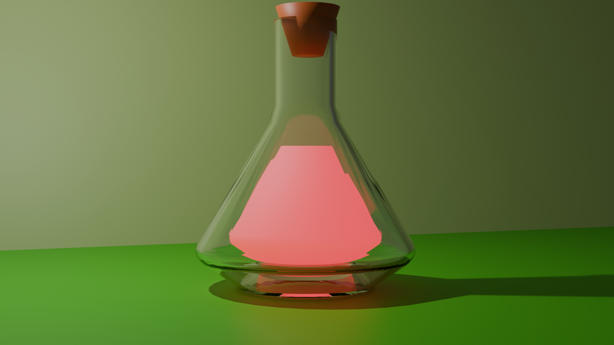

Glass Shader
Cycles
Transmission IOR
Étude analytique du comportement du verre et de la lumière transmissive traversant un fluide coloré. L'accent a été mis sur la fidélité optique et la physique des interfaces.
Verrous Identifier
Éviter les artefacts noirs aux points de contact entre la paroi interne du verre et le volume du liquide. Gestion du bruit numérique provoqué par les caustiques de réfraction.
Solutions Validées
Mise en œuvre d'une légère interpénétration géométrique (le liquide traverse légèrement le verre à hauteur de 100.5% d'échelle) pour annuler la fente d'air artificielle. Optimisation via le Light Path node.